Reading
Problem framing
Literature research supports the project focus on microcystin monitoring in freshwater safety scenarios.
Human Practices
The Human Practices material covers literature research, expert interviews, team exchanges, public education, future research plans, and an integrated feedback loop for project optimization.
Literature research
The supplied material marks literature research as the opening Human Practices activity. This section should later connect background readings on cyanobacterial blooms, microcystins, monitoring standards, and public-health communication to concrete design requirements.
Reading
Literature research supports the project focus on microcystin monitoring in freshwater safety scenarios.
Reading
The later interview content shows that rapid screening must be compared against national-standard methods.
Reading
The literature review should feed into sensitivity targets, field-use assumptions, and risk communication language.
Professor interview
The interview material frames MC-LR monitoring around exposure pathways, public-health warning value, sensor sensitivity, matrix interference, and the relationship between rapid screening and national-standard confirmation.
Risk
Key exposure routes include drinking water as the primary route, water recreation through skin or inhalation exposure, and food-chain exposure through fish and shellfish.
Risk
The material lists acute exposure risks such as liver injury and liver failure, and long-term low-dose concerns such as liver disease and tumor promotion. MC-LR is noted as a Group 2B carcinogen in the interview material.
Translation
Rapid detection is not presented as a replacement for national-standard methods. Its role is to gain time for early discovery, early screening, and early response.
Target
The material lists a minimum usable level at or below 1 μg/L.
Target
The warning target is described at or below 0.3 μg/L.
Target
A stronger research target of 0.05-0.1 μg/L is listed.
Target
The proposed quantitative detection range is 0.05-100 μg/L.
Design
LOD ≤ 0.3 μg/L is listed as a core requirement.
Design
The sensor should distinguish intracellular and extracellular toxins and consider total MCs response.
Design
The proposed workflow is rapid screening, national-standard confirmation, risk communication, and emergency response.
Professor interview
The interview material focuses on practical deployment. It highlights engineered-cell survival, environmental interference, cost control, automatic unattended operation, and staged validation from the laboratory toward field use.
Challenge
The source material lists difficult engineered-bacteria survival, environmental interference, cost control, and unattended operation as key challenges.
Response
Microencapsulation or immobilized-cell technology is proposed, together with remote data transmission and alarm modules.
Priority
The material emphasizes laboratory detection-threshold calibration and comparison with national-standard methods before outdoor pilots.
Validation
Repeated experiments should verify stability and reproducibility, with R², accuracy, false-positive rate, and false-negative rate calculated.
Validation
The staged route is laboratory validation, semi-field testing, and then full-field deployment.
Application
The interview material prioritizes drinking-water-source reservoirs and uses national-standard methods as the benchmark for accuracy.
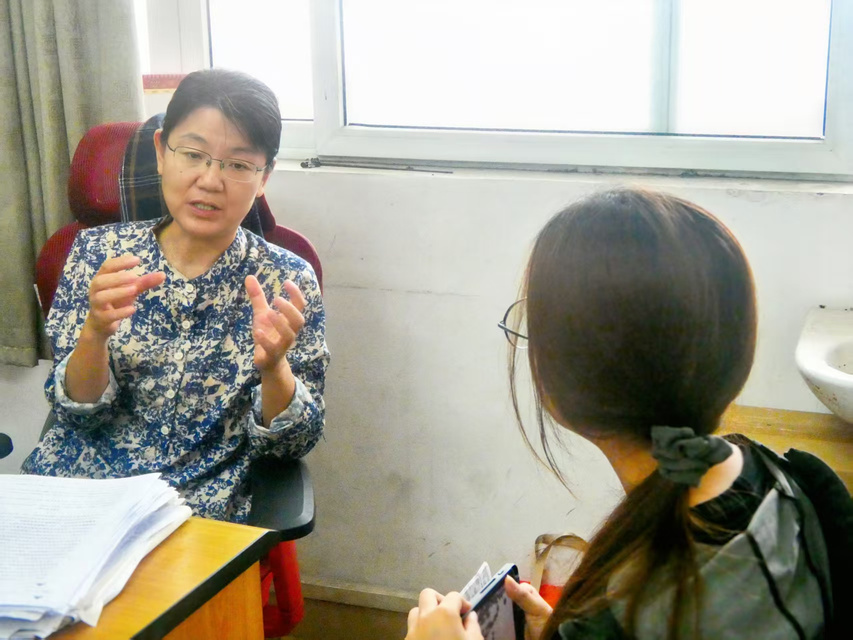
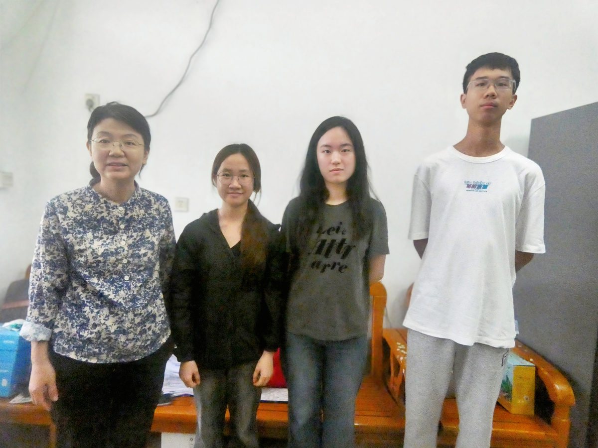
iGEM exchange
The material records the 2026 Second Guangdong-Hong Kong-Macao Greater Bay Area Synthetic Biology Alliance Guangzhou Exchange Meeting, held on March 29 at the College of Life Sciences, South China Agricultural University. SCAU-China presented the Automatic Microcystin Monitoring System and gained input through cross-team discussion.
Exchange
The team presented the project at the Guangzhou exchange and used discussion to broaden project perspective.
Exchange
The material also lists a South China exchange in Shenzhen as part of the Human Practices exchange timeline.
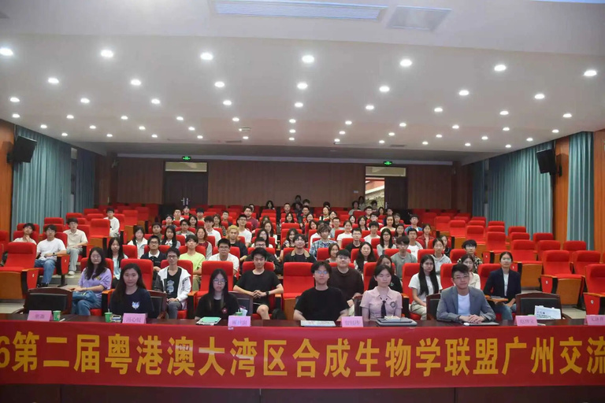
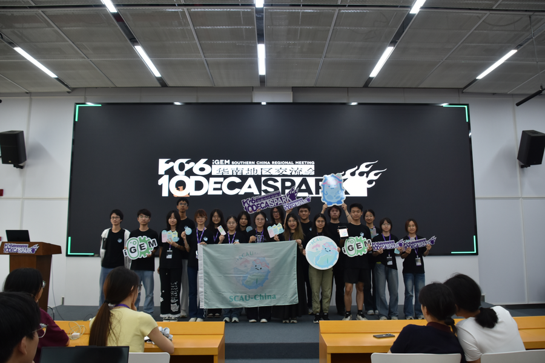
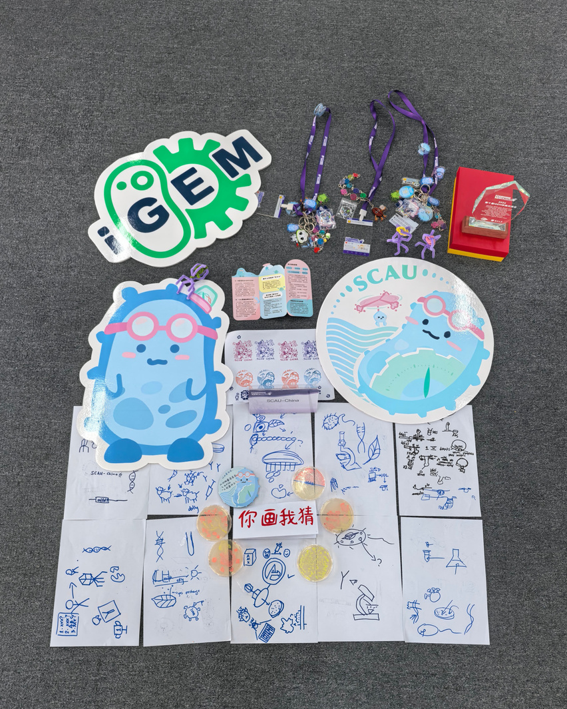
Science communication
The supplied material records outreach activities in March, April, and May, covering campus booths, plant-science public engagement, primary-school classes, and middle-school synthetic-biology lectures.
March
The team used a booth to bring synthetic biology closer to students, making gene circuits less abstract and biological design more accessible.
April
The material describes students stopping to listen and synthetic biology taking root in a spring public-science setting.
May
Under the theme 'Exploring Cyanobacteria: Water Quality Detective Mission', pupils entered the world of microcystins and drew their own engineered-bacteria detectives.
May
The team gave a middle-school lecture from cyanobacterial blooms and toxin risk to genetic circuits and automatic monitoring.
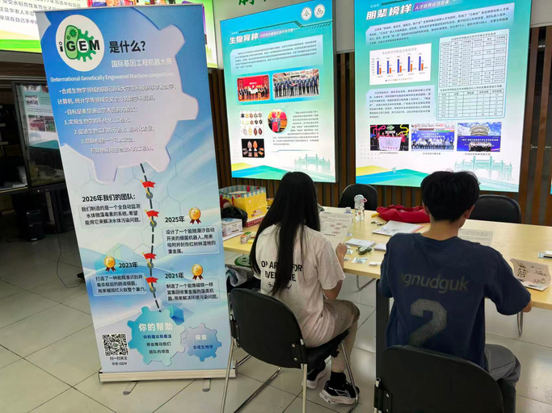
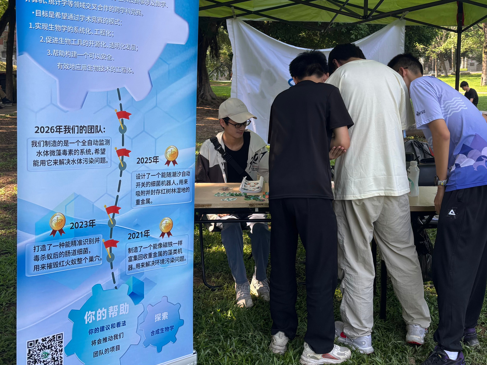
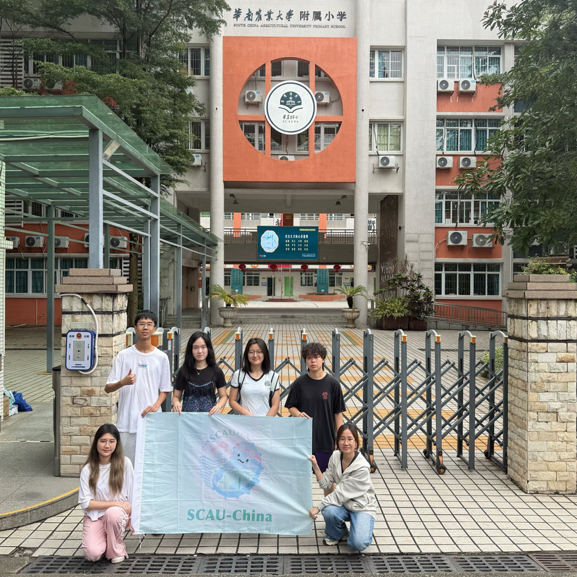
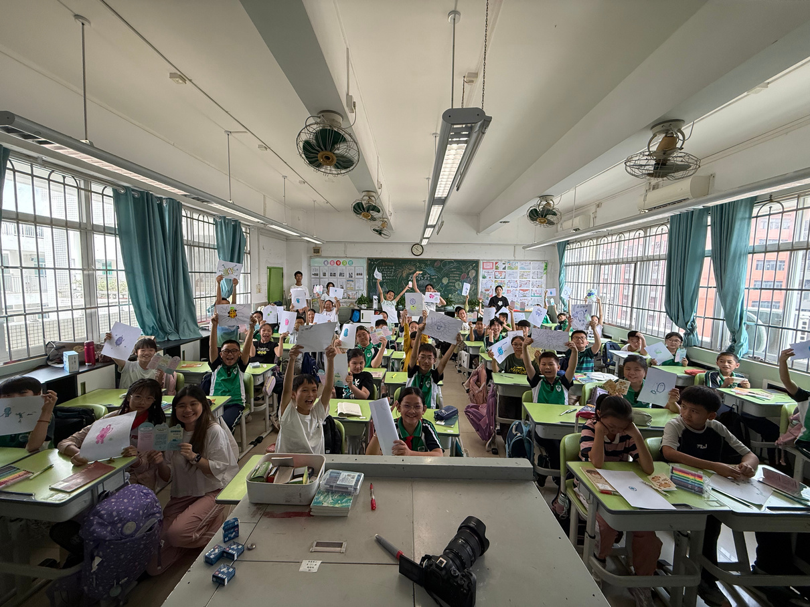
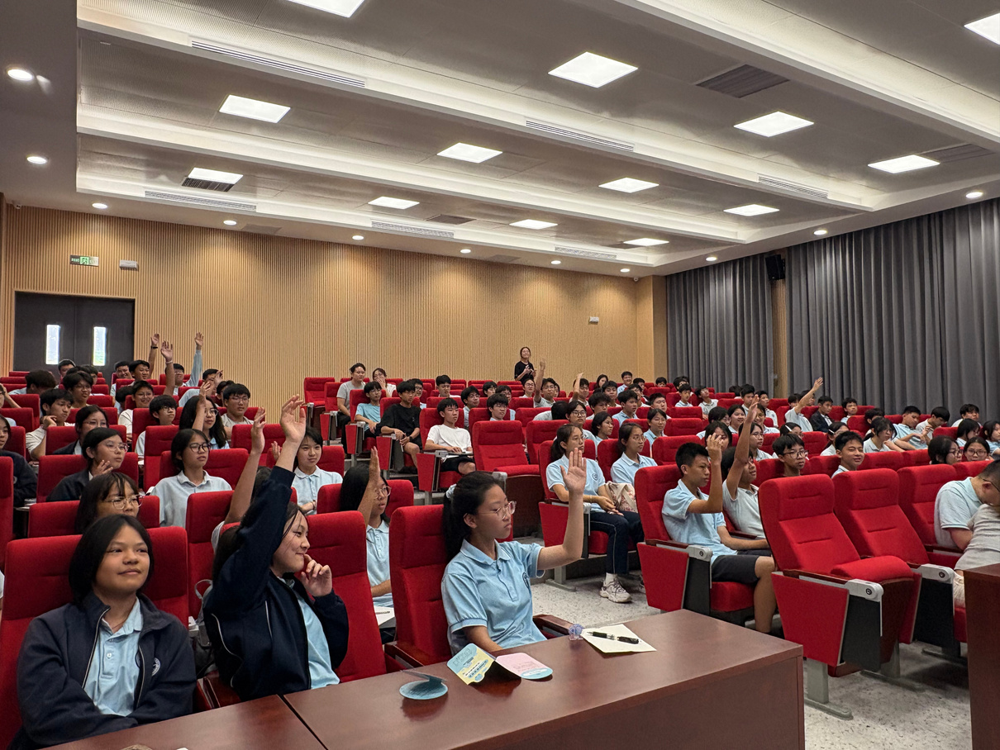
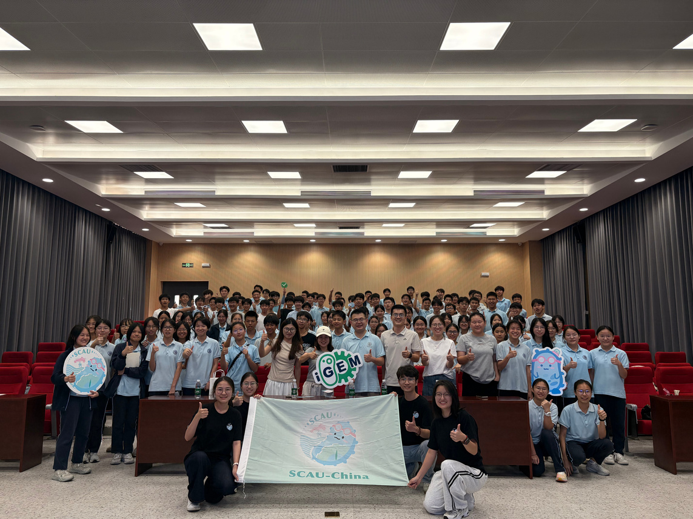
Future plan: communication
The future communication plan includes multi-platform online communication, offline education from multiple angles, and distribution of microcystin-related materials and project cultural products.
Online
WeChat Official Account, Xiaohongshu, Bilibili, and Douyin are listed for articles, short videos, graphic notes, and project progress reports.
Offline
The plan includes summer community outreach, high-school science classes, and museum science booths.
Materials
Planned materials include microcystin tri-fold brochures, circular science booklets, and project cultural-product designs.
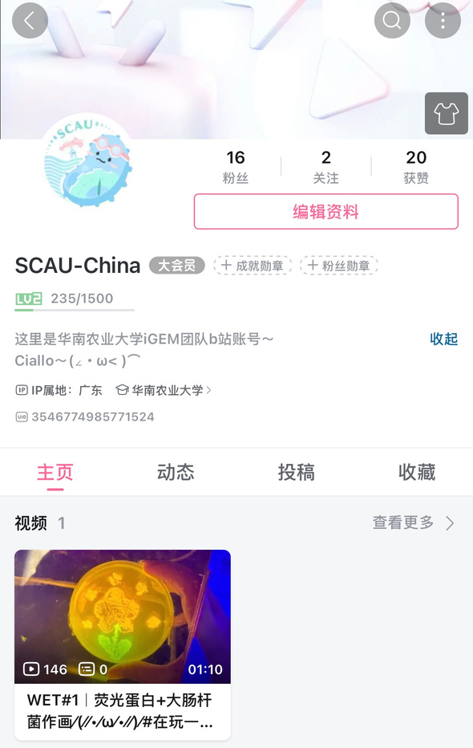
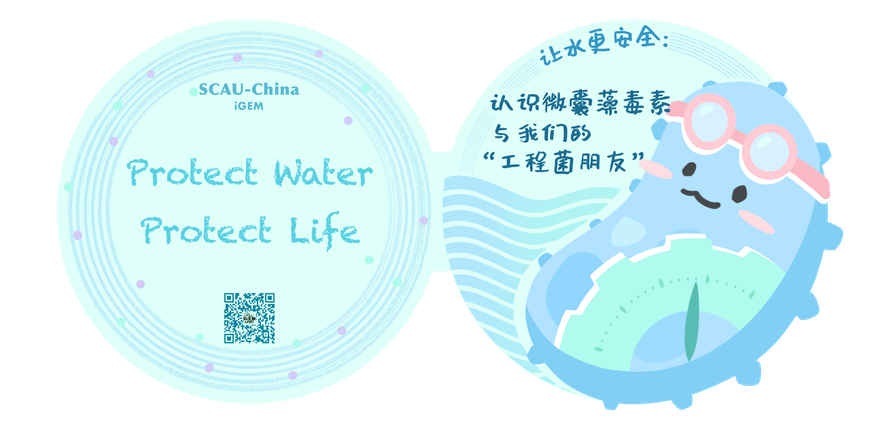
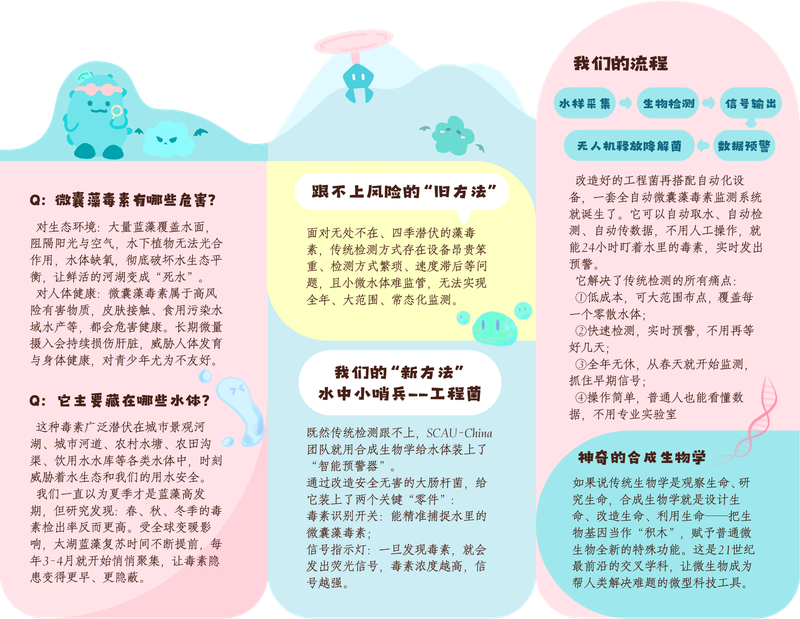
Future plan: research
The research plan lists expert interviews, government department research, company communication, summer fieldwork, and public questionnaire surveys. The goal is to understand water quality, resident water-safety concerns, and public awareness of cyanobacterial blooms.
Stakeholders
The plan includes professors in related fields, Xiamen University professors, hydrology bureaus, ecology and environment bureaus, and water monitoring or treatment companies.
Fieldwork
Summer fieldwork is planned around towns near Guangzhou and rivers or lakes, with visits, questionnaires, science booths, and a final research report.
Survey
Surveys include public awareness of cyanobacterial blooms and drinking-water-safety concerns among reservoir-area residents and city residents.
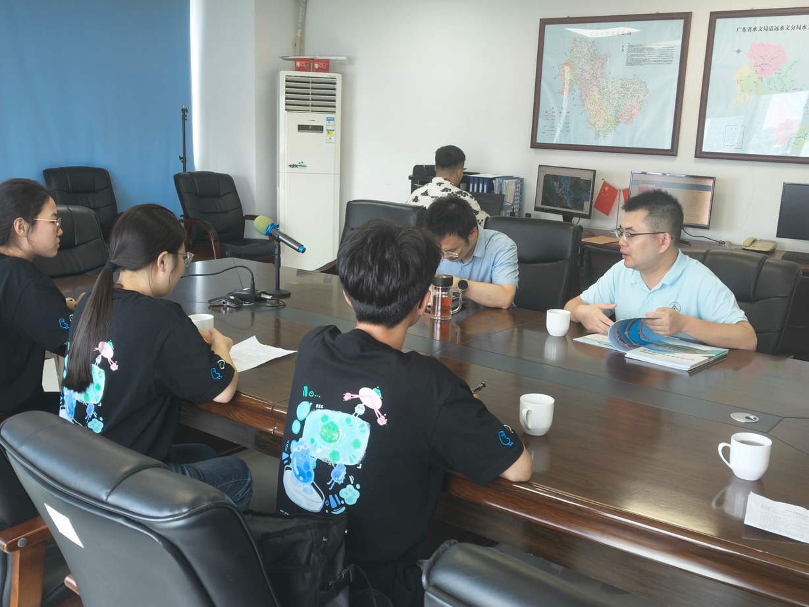
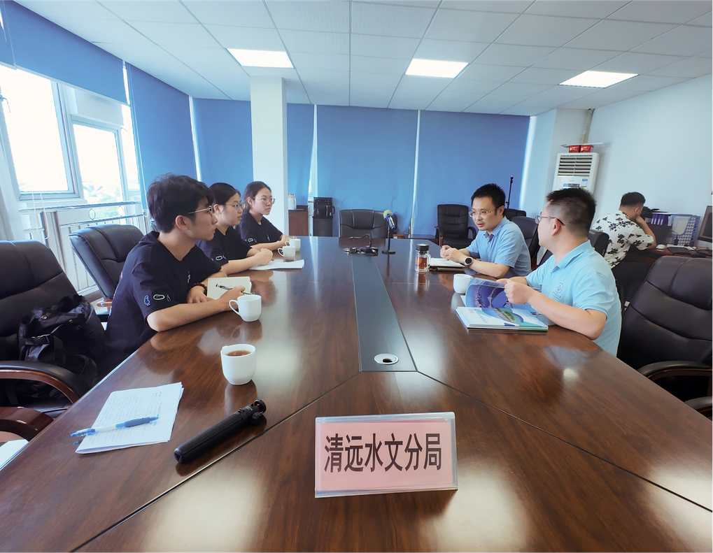
Integrated Human Practices
The final Human Practices slide organizes the work into four connected functions: making science visible and understandable, grounding design in real needs, turning feedback into iteration, and making the project more accurate, stable, and practical.
01
Science should be seen, understood, and shared through school classes, community science booths, and science material development.
02
Design should be grounded through visits to government and company departments, expert interviews, and public questionnaires.
03
Expert suggestions, user needs, and gap analysis should guide iteration efficiently.
04
The project should improve sensitivity targets, strain stability, and practical usability.
Content pending
These items are not available in the current verified materials.